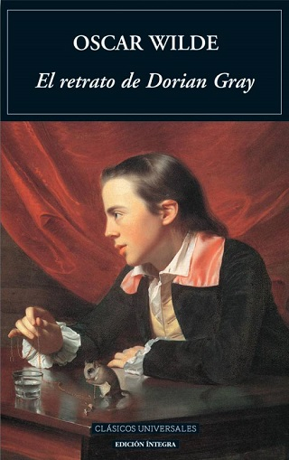
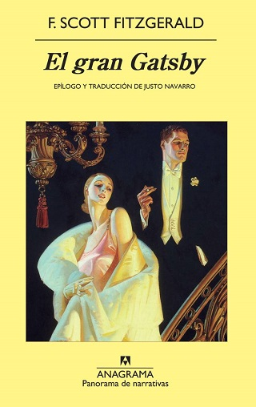

El retrato de Dorian Gray, de Oscar Wilde
2. El retrato de Dorian Gray, de Oscar Wilde. No, no tiene absolutamente nada que ver con las archiconocidas sombras de Christian Grey -nótese la vocal diferenciadora-. El libro de E.L.
James solo debería caer en las manos de tu descendencia como un magnífico ejemplo del rumbo de control y poder que jamás debe alcanzar una relación. Y no, no nos referimos al sexo.
Si quieres aportar algo mucho más beneficioso a tus hijos y, en palabras de Casals, quieres que empiecen “a comprender que no se va a ser joven toda la vida”,
pon en sus manos este clásico de Wilde.

Crezco, de Ben Brooks.
Crezco, de Ben Brooks. “Una manera gamberra contemporánea de dar el salto”. Así define Casals este libro editado en 2011 por un Ben Brooks que, en el momento de su publicación,
contaba con 19 años y aseguraba que el texto -el quinto de su carrera- lo había terminado tres años antes. La historia se centra en Jasper, un joven inglés y su nihilista
recorrido hacia la edad adulta. Todo tintado con un humor fresco y sin pretensiones forzadas. Su protagonista ha sido denominado ya como un Holden Caulfield (protagonista de El
guardián entre el centeno) en los tiempos de Facebook y del ciberacoso.
